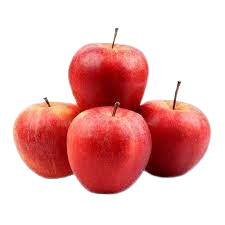
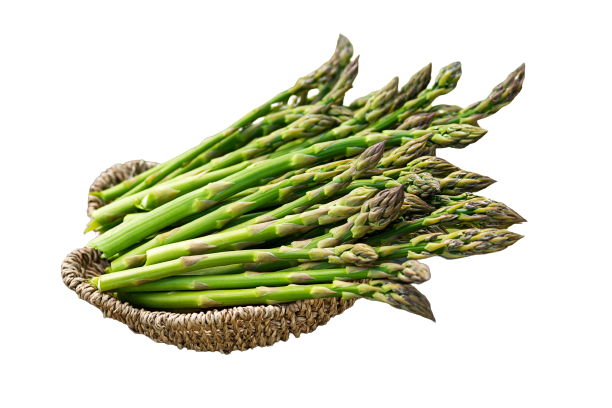
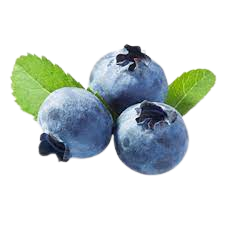
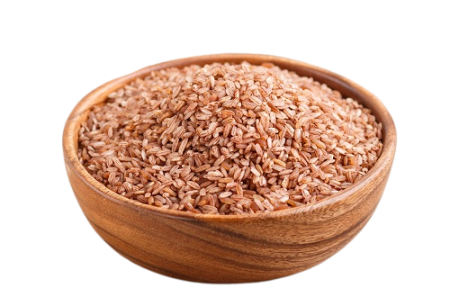
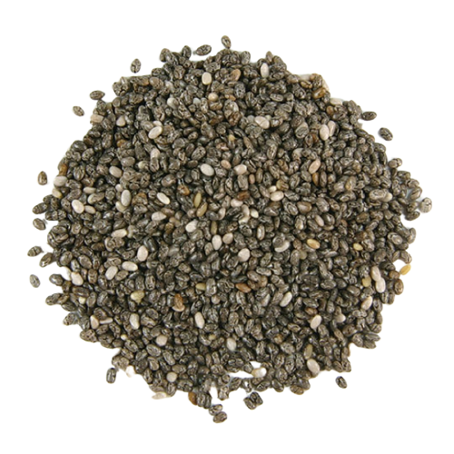
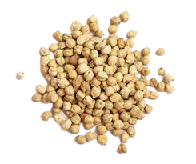

Apple

Apples are one of the best fruits you can eat because they’re rich in quercetin, a plant pigment. Quercetin helps the body secrete insulin more efficiently and wards off insulin resistance, which occurs when the body has to make more and more insulin to help glucose enter the cells. Insulin resistance is the hallmark characteristic of type 2 diabetes.
Asparagus

Low in calories and high in fiber, asparagus and other types of green leafy vegetables are rich in antioxidants, which reduce inflammation and can balance blood sugar levels.
In fact, people who ate one and half extra servings of green leafy vegetables a day cut their risk for type 2 diabetes by 14 percent, an August 2010 meta-analysis in the British Medical Journal found.
Blue Berry

blueberries are all low in calories and carbohydrates, and have a low glycemic index to keep your blood sugar steady. Although they all contain fiber, raspberries and blackberries in particular take the lead to fill you up.
Brown Rice

People who ate three to five servings of whole grains per day were 26 percent less likely to develop type2 diabetes in a July 2012 study published in the Journal of Nutrition. One of the best types of whole grains is brown rice, which is rich in magnesium and fiber, and has a low glycemic index.
If you haven’t been able to make the switch, try medium-grain brown rice, which has a more tolerable texture than the whole-grain variety. Or mix brown and white rice together until you’re able to nix the white rice altogether.
Chia Seeds

Because type 2 diabetes can lead to heart disease and stroke, it’s also a good idea to eat foods like chia seeds. Two tablespoons of chia seeds provides 4 grams of protein and 11 grams of fiber, as well as heart-healthy omega-3 fatty acids.
Chia seeds are also versatile: Add them to oatmeal or muffins, blend them into a smoothie, or make a chia pudding.
Chick Pea

Chickpeas, lentils and beans are all low in calories and saturated fat, have a low glycemic index and a ton of fiber, which takes a long time to digest, so blood sugar doesn’t rise as quickly, Chaparro said.
In fact, eating a cup of beans a day has been shown to reduce blood sugar, an October 2010 study published in the journal Archives of Internal Medicine found.